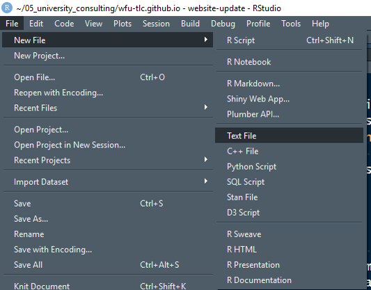

Building and Updating Your Website
Building The First Time
R markdown provides the ability to build simple static websites. These websites can then be easily hosted via a multitude of platforms (e.g. github, gitlab, netifly among others.)
Open a new project
Open a new project in R Studio and name it whatever you would like to call the website. If this is your personal website and you plan on hosting it on Github the project name should be githubhandle.github.io where githubhandle is your Github username. For example my username is medewitt thus my personal website name would be medewitt.github.io. If you are just designing a website for your project or for a course website, then whatever valid project name you would like, go ahead and make.
Set Up the yml
Now that you have a fresh R project, the first file that you need to make is your _site.yml file. This is a yml (y_et a_nother _m_arkup _l_angugage) file that tells R Studio some configuration parameters and most importantly how to build your website.
Create this file by selecting
- File
- New File
- New Text File

Now go ahead and copy the below text into the new file and save it as "_site.yml".
The _site.yml file tells R Studio how to build your website. In the below example R Studio will build a website that is named “Data Analysis in R” that will output the built website into a folder called docs. Additionally there will be a navigation bar across the top with all of the individual features on the right. These features will include “Course Notes”, “Pre-Work”, and “Project” each with a font awesome icon and associated text. There are some additional features that have been created which include some information about citations, paging, and the css (or style sheet) for the website.
name: "Data Analysis in R"
output_dir: "docs"
navbar:
title: "Data Analysis in R"
right:
- text: "Course Notes"
icon: fa-book
href: course_notes.html
- text: "Pre-Work"
icon: fa-paper-plane
href: pre_work.html
- text: "Project"
icon: fa-folder
href: project.html
output:
html_document:
theme: journal
highlight: textmate
css: css/style.css
df_print: paged
toc: true
toc_float: yes
bibliography: library.bib
biblio-style: apalike
include:
after_body: footer.htmlThis will build the below site structure:
[images/rmd-website-1.png]
You’ll notice that the name of the website and the navigation bar are based on the names we specified in the _site.yml file.
You can see that the icons and text for each of the navigation features is also reflected.
navbar:
title: "Data Analysis in R"
right:
- text: "Course Notes"
icon: fa-book
href: course_notes.html
- text: "Pre-Work"
icon: fa-paper-plane
href: pre_work.html
- text: "Project"
icon: fa-folder
href: project.html[images/rmd-website-4.png]
There are thousands of Font Awesome Icons, if you don’t like these check out the cheatsheet
You can also see how our specifications for table of contents (toc) is represented:
[images/rmd-website-3.png]
All of the features can be customised as you grow more comfortable in building your website.
Build the pages
Now that we have a _site.yml document we need to create some webpages. The first webpage that we need to create is the index.html. This is the default landing page for users who go to your website. With Rmarkdown websites we will generate all of our webpages through .Rmd files. All of the Rmd files will be rendered to html files with the same root name of the Rmd file.
To build the index page we will create a new Rmd document by:
- File
- New File
- New R Markdown File
Go ahead and select html and don’t worry about the title…we’ll be changing that.
Now with your new Rmd file go ahead and change the yml within the header to look like the following:
---
title: "Welcome"
---
Within the body of the Rmd document go ahead and type whatever message you would like people who enter your site to see. Within these documents you can use all of the normal markdown language markup styling. You can add code chunks and images to your heart’s desire.
When you finish, save this document as index.Rmd. You can repeat this process for each of the pages that you reference in your _site.yml document. Again, the names of the Rmd documents must match the html names in your _site.yml.
Update the css
CSS or cascading style sheets are a way to formalise the format of html documents. If you do not specify a css file your website will be built with the standard css based on the theme you specify in the _site.yml file. In the case of the above example we chose the journal theme. That is a good place to start. However, if we want to modify our css for a particular feature we can do that by creating a css file. As in the above section create a new text file and save it in a folder call css. Then save this document as style.css.
If for example you want a first level header to be underlined (e.g. the the text after # Title One to have an underline) then you can add a line to your style.css document like below:
.level1 h1 {
border-bottom: 2px solid;
}Now a two pixel wide, solid line will be drawn under ever level one header. Again, this feature is for more advanced users, but it is available for more customization.
Build the website
After you have made all of your Rmd files that are associated with the individual pages that you have built it is time to build your website. This operation can be done a few different ways. Using the graphical user interface (GUI) approach, if you look in the upper right hand pane of R Studio you will see a tab called build. Select this tab and then press the build website button. This will initiate the build for your entire website. This shown below:
[images/rmd-website-5.png]
You can also initiate this process from the console by typing:
rmarkdown::render_site()In either case all of the Rmds will be knitted to html files with additional html code appended based on your specification in the _site.yml file.
Now you just need to push all of the new files to Github. You can use the GUI, or use the terminal via:
git add --a
git commit -m "update website"
git push origin master
Share with Github pages
The next step is to enable Github to share your static html website. This can be done by navigating to https://github.com in your browser to your repository. There go the settings tab:
Once you have selected settings then scroll down to the Github Pages section.
Once there select “master branch /docs folder” under the source.
Go ahead and press the Save button. Now your website should be hosted at the web address displayed!
Update the website
From time to time you may want to update your website. This could be updating pages our adding new pages. You would repeat the same kind of actions as described above when you created the website. For example you may need to update your _site.yml file if you want additional features to appear on your navigation bar. Additionally, you may just update content on an existing page.
Once you have completed your updates you can build the entire site as described above using the GUI or the console. If you do this the entire website will be rebuilt with the updates. However, if you only update one part of your website and don’t want to rebuild the entire website (which could be the case if one of your Rmd takes a long time to run like a model) then you can use the console to only render the page which you updated.
An example could be that I updated the resources.Rmd file. No other files have been changed. If I wanted to update only this file I could type the following command in the console:
rmarkdown::render_site("resources.Rmd")R Studio will only rebuilt this document and any supporting information in the index.Rmd. This is especially useful if something takes a long time to run and you don’t need to rebuild it.
Again, after the update you would need to use the git commands to add, commit and push the updates to your Github. There is no need to change the settings on the repository. Your website should update shortly with the new changes.
More References
This is just a primer. There are many other examples on how to build, update and customise R markdown websites
For a simple primer, read the introduction from R Studio
For the detailed information, read the definitive guide to R Markdown
Another example of building an R Markdown website here